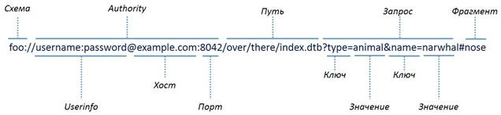
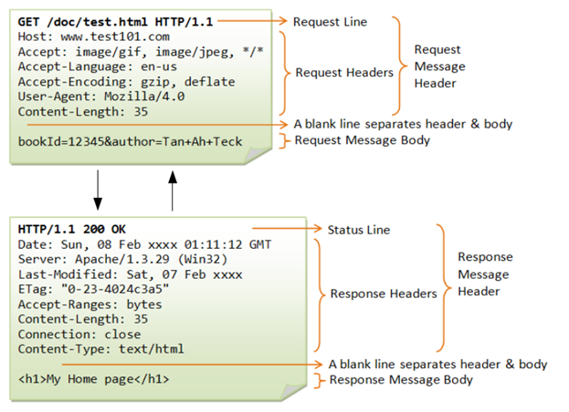

В состав стандартной библиотеки Python входит множество модулей, позволяющих работать практически со всеми протоколами Интернета и решающих в том числе наиболее часто встречающиеся задачи:
− разбор URL-адреса и строки запроса на составляющие,
− преобразование гиперссылок,
− обмен данными по протоколу HTTP.
URI (англ. Uniform Resource Identifier) - унифицированный (единообразный) идентификатор ресурса.
Пример URI приведен на рисунке. Обязательными атрибутами являются: имя, схема, путь, и Userinfo в случае авторизации.

Как HTTP-запрос (англ. Request), так и HTTP-ответ (англ. Response) имеют следующий формат:
1. Стартовая строка (англ. Starting Line) — определяет тип сообщения (обязательна);
2. Заголовки (англ. Headers) — характеризуют тело сообщения, параметры передачи и прочие сведения (могут отсутствовать);
3. Пустая строка;
4. Тело сообщения (англ. Message Body) — непосредственно данные сообщения (например, код HTML-страницы или файл).
Основные HTTP-заголовки и их предназначение:
− GET - заголовок запроса при передаче данных методом GET;
− POST - заголовок запроса при передаче данных методом POST;
− Host - название домена;
− Accept - MIME-типы, поддерживаемые Web-браузером;
− Accept-Language - список поддерживаемых языков в порядке предпочтения;
− Accept-Charset - список поддерживаемых кодировок;
− Accept-Encoding - список поддерживаемых методов сжатия;
− Content-Туре - тип передаваемых данных;
− Content-Length - длина передаваемых данных при методе POST;
− Cookie - информация об установленных cookies;
− Last-Modified - дата последней модификации файла;
− Location - перенаправление на другой URL-адрес;
− Pragma - заголовок, запрещающий кэширование документа в протоколе HTTP/1.0;
− Cache-Control - заголовок, управляющий кэшированием документа в протоколе HTTP/1.1;
− Referer - URL-адрес, с которого пользователь перешел на наш сайт;
− Server - название и версия программного обеспечения Web-сервера;
− User-Agent - информация об используемом Web-браузере.

Код состояния HTTP — часть первой строки ответа сервера при запросах по протоколу HTTP. Он представляет собой целое число из трёх десятичных цифр. Первая цифра указывает на класс состояния. За кодом ответа обычно следует отделённая пробелом поясняющая фраза
• 1xx: Informational (информационные)
• 2xx: Success (успешно):
– 200 OK («хорошо»)
– 201 Created («создано»)
– 202 Accepted («принято»)
• 3xx: Redirection (перенаправление)
• 4xx: Client Error (ошибка клиента):
– 400 Bad Request («неверный запрос»);
– 404 Not Found («не найдено»)
• 5xx: Server Error (ошибка сервера):
– 500 Internal Server Error («внутренняя ошибка сервера»)
– 501 Not Implemented («не реализовано»)
– 502 Bad Gateway («ошибочный шлюз»)
– 504 Gateway Timeout («шлюз не отвечает»)
Разобрать URL-адрес на составляющие позволяет функция urlparse() стандартного модуля urllib.parse.
Возвращаемое значение представляет собой именованный кортеж, что означает, что к его элементам можно получить доступ по индексу или как к именованным атрибутам:
|
Атрибут |
Индекс |
Обозначение |
Значение по умолчанию |
|
scheme |
0 |
Спецификатор схемы URL |
параметр схемы |
|
netloc |
1 |
Часть сетевого расположения |
пустой строкой |
|
path |
2 |
Иерархический путь |
пустой строкой |
|
params |
3 |
Параметры для последнего элемента пути |
пустой строкой |
|
query |
4 |
Компонент запроса |
пустой строкой |
|
fragment |
5 |
Идентификатор фрагмента |
пустой строкой |
|
username |
|
Имя пользователя |
None |
|
password |
|
Пароль |
None |
|
hostname |
|
Имя хоста (нижний регистр) |
None |
|
port |
|
Номер порта как целое число, если присутствует |
None |
!!!! urlparse распознает netloc, только если он правильно введен с помощью '//'. Иначе предполагается, что ввод является относительным URL-адресом и, таким образом, начинается с компонента пути.
>>> urlparse('www.cwi.nl/%7Eguido/Python.html')
ParseResult(scheme='', netloc='', path='www.cwi.nl/%7Eguido/Python.html', params='', query='', fragment='')
>>> urlparse('help/Python.html')
ParseResult(scheme='', netloc='', path='help/Python.html', params='', query='', fragment='')
!!!! Обратите внимание на то, что значение параметра <Запрос> (query) возвращается в виде строки. Строка запроса является составной конструкцией, содержащей пары параметр=значение. Все специальные символы внутри названия параметра и значения кодируются последовательностями %nn. Например, для параметра str, имеющего значение "Строка" в кодировке Windows-1251, строка запроса будет выглядеть так:
str=%Dl%F2%F0%EE%EA%E0
Если строка запроса содержит несколько пар параметр=значение, то они разделяются символом &. Добавим параметр v со значением 10:
str=%Dl%F2%F0%EE%EA%E0&v=10
В строке запроса может быть несколько параметров с одним названием, но разными значениями,- например, если передаются значения нескольких выбранных пунктов в списке с множественным выбором:
str=%Dl%F2%F0%EE%EA%EG&v=10&v=20
Выполнить обратную операцию (собрать URL-адрес из отдельных значений) позволяет функция urlunparse (<Последовательность>).
Вместо функции urlparse() можно воспользоваться функцией
urlsplit (<URL-адрес>[, <Схема> [, <Разбор якоря>] ]).
Ее отличие от urlparse() проявляется в том, что она не выделяет из интернет-адреса параметры.
Выполнить обратную операцию (собрать URL-адрес из отдельных значений) позволяет функция urlunsplit (<Последовательность>).
Модуль http.client определяет классы, реализующие клиентскую сторону протоколов HTTP и HTTPS.
Автоматический сбор данных с веб-страниц можно упростить с помощью модулей Python:
− webbrowser поставляется вместе с Python и предназначен для открытия браузера на определенной веб-странице.
− requests загружает файлы и веб-страницы из Интернета.
− BeautifulSoup предназначен для синтаксического анализа кода HTML-языка, на котором написаны веб-страницы.
− Selenium запускает веб-браузер и управляет его работой; способен заполнять формы и имитировать щелчки мышью в браузере.
Функция open () модуля webbrowser запускает браузер с использованием указанного URL-адреса.
Пример программы с использованием модуля webbrowser
Написать программу, которая открывает (указывает) в приложении Google Maps адрес, содержащийся в буфере обмена.
Если загрузить в браузер страницу http://maps.google.com/ и выполнить поиск по интересующему почтовому адресу, то URL-адрес, отображаемый в адресной строке браузера, будет выглядеть примерно так:
Поиск адреса: 870 Valencia St, San Francisco, CA
https://www.google.com/maps/place/870+Valencia+St/@37.7590311, 122.4215096,17z/data=!3ml!4bl!4m2!3ml!Is0x808f7e3dadc07a37:0xc86b0b2bb93b73d8
URL-адрес содержит почтовый адрес, но, кроме него, включает также дополнительный текст. Веб-сайты часто вставляют дополнительные данные в URL-адреса, которые используются для отслеживания привычек посетителей или адаптации сайта к запросам пользователей. Если исключить эти данные и выполнить в браузере переход по упрощенному адресу
https://www.google.com/maps/place/870+Valencia+St+San+Francisco+CA/,
то по-прежнему отображается нужная страница. Следовательно, достаточно настроить программу на страницу https://www.google.com/maps/place/ваша_адресная_строка, где ваша_адресная_строка — это почтовый адрес, в соответствии с которым должна быть открыта карта.
import webbrowser, pyperclip
# Получение почтового адреса из буфера обмена.
address = pyperclip.paste()
webbrowser.open('https://www.google.com/maps/place/' + address)
requests - это HTTP-библиотека Python, основная цель разработки которой - сделать HTTP-запросы более простыми и удобными.
Примеры разных видов запросов (GET, POST, HEAD, PUT, DELETE):
>>> r = requests.get('https://api.github.com/events') # GET-запрос
>>> r = requests.post('https://httpbin.org/post', data = {'key':'value'})
>>> r = requests.head('https://httpbin.org/get')
>>> r = requests.put('https://httpbin.org/put', data = {'key':'value'})
>>> r = requests.delete('https://httpbin.org/delete')
Метод raise_for_status() — это эффективный способ гарантированной остановки программы в случае неудачной загрузки.
Данный метод возбуждает исключение, если в процессе загрузки файла произошла ошибка, и не совершает никаких действий в случае успешной загрузки.
Можно обернуть строку кода raise_for_status() конструкцией try/except, чтобы обработать эту ошибку, не допуская аварийной остановки программы.
res= requests.get ('http://invalid’)
try:
res.raise_for_status ()
except Exception as exc:
print('Возникла проблема: %s' % (exc))
#в результате выведет:
Возникла проблема: 404 Client Error: Not Found
Целесообразно всегда вызывать метод raise_for_status() после функции requests.get(). Это позволяет убедиться в том, что загрузка действительно была осуществлена, прежде чем предоставить программе возможность дальнейшего выполнения.
Ответ на запрос GET содержит информацию. Она находится в теле сообщения и называется пейлоад (payload). Используя атрибуты и методы библиотеки Response, можно получить пейлоад в различных форматах.
Для того, чтобы получить содержимое запроса в байтах, необходимо использовать .content
>>> r = requests.get('https://api.github.com/events') # GET-запрос
>>> r.content
b'[{"repository":{"open_issues":0,"url":"https://github.com/...
Однако, зачастую требуется конвертировать полученную информацию в строку в кодировке UTF-8. response делает это при помощи .text.
В случае успешного запроса загруженная страница сохраняется в виде строки в переменной text объекта Response. Т.е. можно прочитать содержимое ответа сервера.
>>>res = requests.get ('http://www.gutenberg.org/cache/epub/1112/pg1112.txt’)
В переменной res.text хранится полный текст пьесы в виде одной длинной строки; результат вызова len(res.text) говорит о том, что эта строка содержит более 178 000 символов.
>>>len(res.text)
178981
>>>print (res.text [: 250])
Вызов print (res.text [: 250]) отображает лишь первые 250 символов.
Записать веб-страницу в файл можно с помощью цикла for по возвращаемому значению метода iter_content () объекта Response. Метод iter_content () возвращает порции содержимого на каждой стадии цикла. Каждая порция данных — это данные байтового типа, и нужно самому указать, сколько байтов должна содержать каждая порция.
Алгоритм процесса загрузки и сохранения файла:
1. Вызов функции requests.get () для загрузки файла.
2. Вызов функции open () с аргументом 'wb' для создания нового файла в режиме записи двоичных данных.
3. Цикл по возвращаемому значению метода iter_content () объекта Response.
4. Вызов метода write () на каждой итерации для записи содержимого файла.
5. Вызов метода close () для закрытия файла.
Пример1: скачать содержимое страницы http://www.gutenberg.org/cache/epub/1112/pg1112.txt в файл 1.txt порциями по 100000 байт.
>>> import requests
>>> res = requests.get('http://www.gutenberg.org/cache/epub/1112/pg1112.txt’)
>>> res.raise_for_status()
>>> playFile = open(‘1.txt', ‘wb')
>>> for chunk in res.iter_content(100000):
playFile.write(chunk)
100000
78983
>>> playFile.close()
Метод write () возвращает количество байтов, записанных в файл (по умолчанию 1 байт). В примере первая порция включала 100000 байт, для оставшейся части файла понадобилось только 78983 б.
В рабочем каталоге появился файл RomeoAndJuliet.txt.
>>> import requests
>>> url = 'https://learn.python.ru/media/projects/sl1_Cj4bKxp.png'
>>> im = requests.get(url, stream=True)
>>> with open('new.png', 'wb') as f:
... f.write(im.content)
По умолчанию stream=False, это сделано для того, чтобы препятствовать загрузке больших объемов данных, т.к. мы можем не знать размеры скачиваемых объектов. После выполнения данного скрипта, мы увидим новое изображение под названием new.png в директории, из которой у нас запущен скрипт.